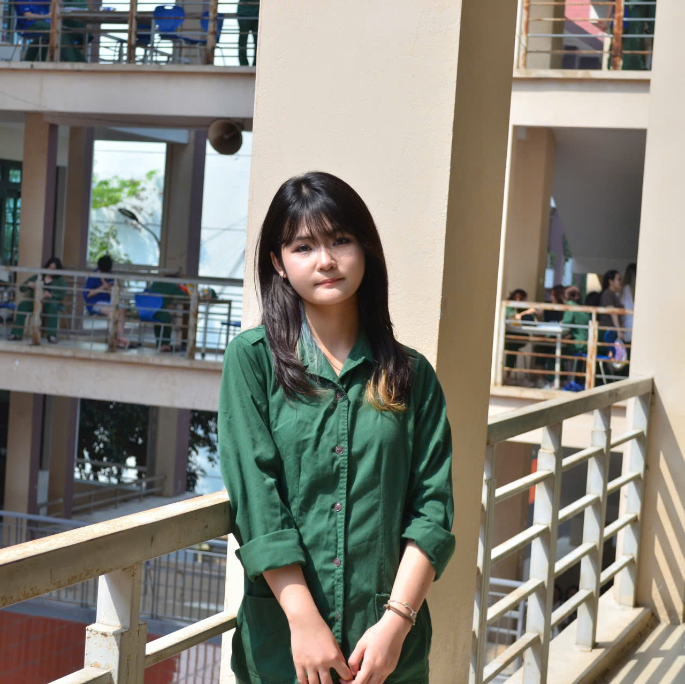

Ngô Minh Anh
Sinh viên ngành Ngôn ngữ Anh, Trường Đại học Ngoại ngữ - Đại học Quốc gia Hà Nội. Trang này tổng hợp lại toàn bộ quá trình mình làm quen với công nghệ số và trí tuệ nhân tạo trong môn Nhập môn Công nghệ số và Ứng dụng Trí tuệ nhân tạo - một môn học đầy bổ ích và thú vị.

Đôi nét về mình
Học ngôn ngữ, làm quen công nghệ và tập dùng AI như một người bạn đồng hành trong học tập.
Mình là ai
Mình tên Ngô Minh Anh, hiện là sinh viên ngành Ngôn ngữ Anh tại Trường Đại học Ngoại ngữ - ĐHQGHN. Trang portfolio này được mình xây dựng trong quá trình học học phần Nhập môn Công nghệ số và Ứng dụng Trí tuệ nhân tạo, dùng để lưu lại 6 bài thực hành cùng những gì mình quan sát và rút ra được trong suốt học phần.
Ngoài giờ học
Khi rảnh, mình thường tìm đến những thứ nhẹ nhàng để nạp lại năng lượng: đọc sách, xem phim có phụ đề tiếng Anh để trau dồi phản xạ ngôn ngữ, hoặc đơn giản là nghe một playlist quen thuộc trong lúc học bài.
Mình muốn đạt được điều gì
Mục tiêu của mình trong học phần này là hiểu được những nguyên tắc cơ bản khi làm việc với công nghệ số, đồng thời biết cách đặt câu hỏi (prompt) cho AI một cách rõ ràng, có mục đích để hỗ trợ việc học ngoại ngữ và xử lý công việc hằng ngày hiệu quả hơn.
Hướng đi sắp tới
Mình dự định kết hợp năng lực tiếng Anh với các công cụ số để phục vụ việc dịch thuật, biên soạn học liệu và hỗ trợ cho công việc của mình sau này. Với mình, AI chỉ nên đóng vai trò trợ lý — người đưa ra quyết định cuối cùng vẫn phải là chính mình.
Vì sao có portfolio này
Đây là nơi mình ghi lại toàn bộ chặng đường học tập của học phần Nhập môn Công nghệ số và Ứng dụng Trí tuệ nhân tạo — từ 6 bài thực hành cho đến những trải nghiệm, khó khăn và bài học rút ra được. Portfolio không chỉ là nơi lưu kết quả, mà còn là dấu mốc cho thấy mình đã tiến bộ ra sao trong việc ứng dụng công nghệ số vào học tập ngôn ngữ.
Sáu bài thực hành — mục tiêu & kết quả
Điều mình rút ra khi làm Portfolio
Sắp xếp và trình bày dữ liệu học tập theo cách khoa học, dễ tra cứu hơn trước rất nhiều.
Rèn tư duy phản biện khi tìm kiếm và đánh giá độ tin cậy của nguồn tài liệu tiếng Anh.
Biết đặt câu hỏi cụ thể, rõ ràng để khai thác AI hiệu quả thay vì hỏi chung chung.
Làm quen với việc phối hợp nhóm và theo dõi tiến độ công việc trên nền tảng trực tuyến.
Biết dừng đúng lúc khi dùng AI để sản phẩm vẫn giữ được dấu ấn cá nhân.
Kiên nhẫn chỉnh sửa nhiều vòng để có một sản phẩm trình bày gọn gàng, chuyên nghiệp.
Nhìn lại một học kỳ
Mình đã dần chủ động hơn trong cách học và làm việc cùng AI từng ngày.
Khi mới bắt đầu
Mình khá dè dặt với các thuật ngữ công nghệ số, chưa biết nên bắt đầu từ công cụ nào và hỏi AI ra sao cho đúng ý.
Trong lúc thực hành
Qua từng bài, mình quen dần với việc tổ chức tài liệu, kiểm tra độ tin cậy của nguồn tin và viết prompt cụ thể hơn thay vì hỏi mơ hồ.
Sau khi hoàn thành
Mình tự tin hơn khi đưa công nghệ số vào việc học tiếng Anh, đồng thời hiểu rõ nên và không nên dựa vào AI ở mức độ nào.
💙 Cảm nghĩ sau khi hoàn thành Portfolio
Làm xong portfolio này, mình nhận ra bản thân đã đi được một chặng khá dài — từ những thao tác máy tính cơ bản đến việc biết khai thác AI có chọn lọc, có trách nhiệm. Quá trình này cũng giúp mình luyện thêm khả năng trình bày ý tưởng mạch lạc bằng cả tiếng Việt lẫn tiếng Anh.
Mình xem đây là một cột mốc nhỏ nhưng đáng nhớ trong hành trình học ngôn ngữ kết hợp công nghệ, và cũng là động lực để mình tiếp tục tìm hiểu sâu hơn trong các học kỳ tới.